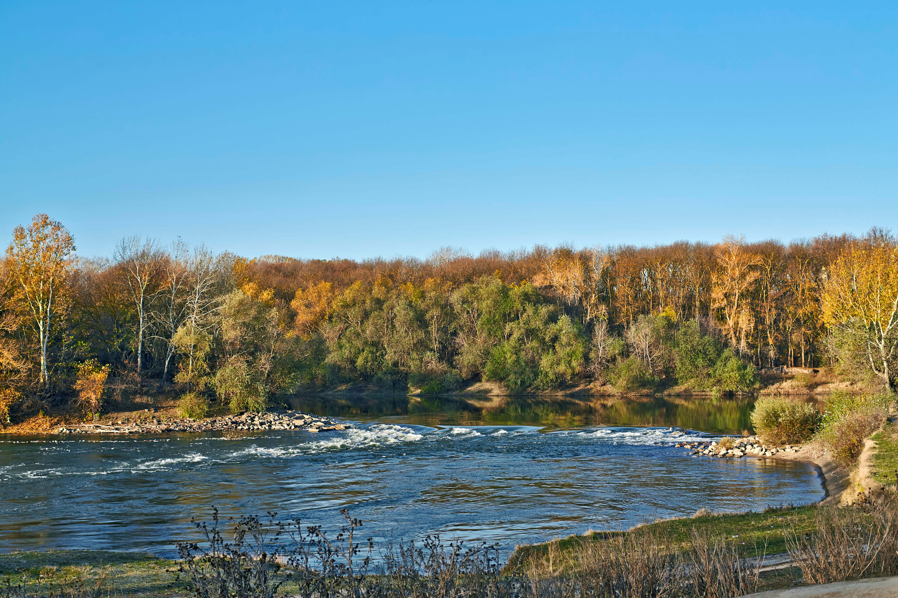
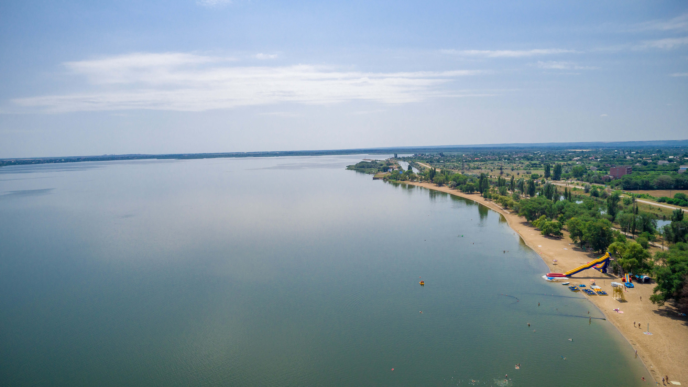
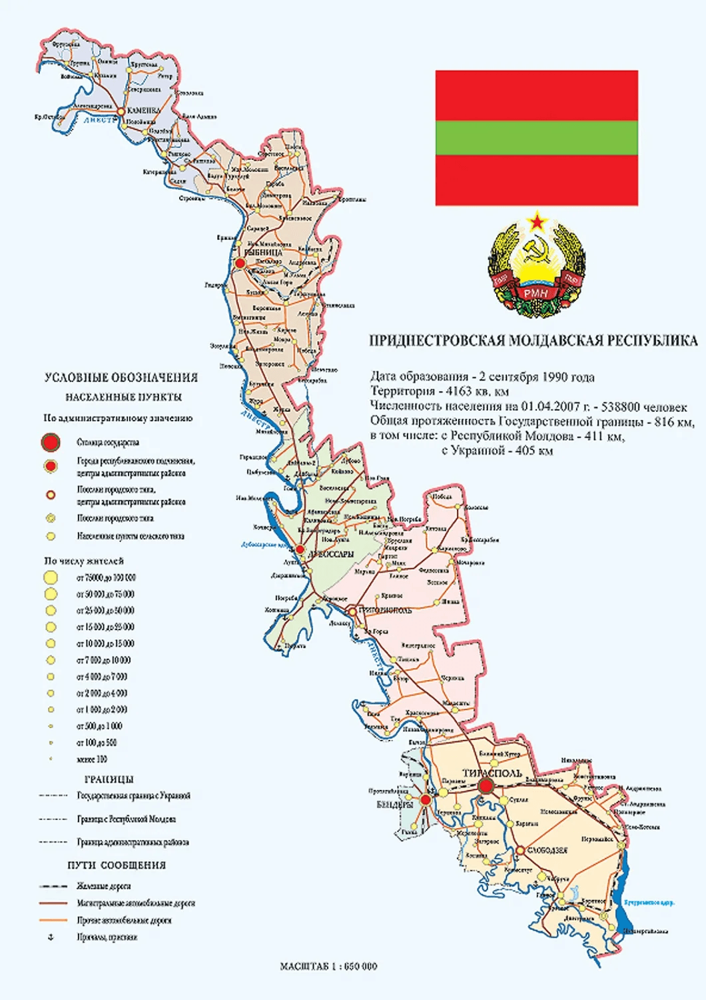

Многогранный край с глубокой историей
Регион отличается умеренно-континентальным климатом: мягкая зима, ранняя весна, жаркое лето и тёплая продолжительная осень. Природа разнообразна: от лесостепей севера («маленькая Швейцария» в Каменке) до золотых степей юга.
Более 80% земель — плодородные чернозёмы. Благоприятный климат позволяет получать до двух урожаев в год и выращивать великолепный виноград.

Здесь переплелись культуры более 75 национальностей. Это разнообразие отражается во всём: от ярких танцев и фольклора до уникальной кухни, сочетающей молдавские, украинские, болгарские и еврейские традиции.
Главные символы гостеприимства — домашнее вино, мамалыга, плацинды и искренние улыбки местных жителей.


Столица основана А.В. Суворовым в 1792 году. Город возник как крепость Срединная на Днестровской линии. Главный архитектор плана города — Франц де Волан.
Основан в 1408 году. Древний город на изгибе Днестра, через который проходили великие торговые пути. С историей города связаны имена Суворова, Пушкина и многих других.
Историческое место Черноморского казачьего войска. До 1793 года здесь находилась главная резиденция казачьего «Коша», ставшая подобием Сечи на Днестре.
Один из древнейших городов региона, упоминания о котором относятся к периоду монголо-татарского нашествия (XIII век).
Основан в 1792 году указом Екатерины II. Город задумывался как крупный торговый центр на месте армянской колонии.
Известен с 1628 года. В разное время город входил в состав Киевской Руси, Великого княжества Литовского и Польского королевства.
Самый северный город, богатый живописными ландшафтами отрогов Карпат. Известен своими лечебными традициями и уникальной природой.
Основан в 1961 году как «город энергетиков». Расположен у Молдавской ГРЭС на берегу лимана, где когда-то селились беглые крепостные.